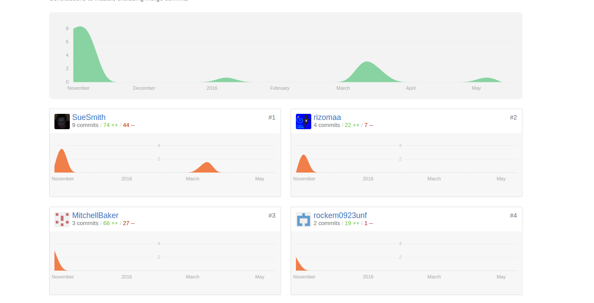

Collaborative Coding or Cheating
I haven't been teaching this past semester. That's why I haven't been writing much about lessons. I miss working with students but that will resume in the fall and this semester has allowed me to get a jump on new projects.
It's also allowed me to look at some student issues from a bit of a distance.
One issue that keeps coming up is cheating.
Some of it, classroom cheating. my friend Ria recently asked a question on Facebook about it. A nice thread ensued but unfortunately, it's locked in the Facebook silo. I've got a lot to say on that and hope to explore it soon but today let's focus on project cheating - something that could just as easily apply to homeworks and student essays and research papers as well.
One part of the question is on students using code they find out in the wild. Alfred wrote a bit about it on his blog here where he points out some pluses, some minuses, and raises some good thought points.
I want to keep it in the class - code sharing amongst students, project and source code submission, and group projects.
Teachers have all sorts of options these days including:
- Using a CMS like Blackboard or Moodle
- Dropbox based solutions
- Emailing projects
- Using development tools and sites such as git with GitHub, BitBucket or other repository hosting services
I've always been a fan of having the kids learn real software engineering skills along with the CS so Git, GitHub and public repos have been my weapon of choice.
Interesting enough, I've gotten an earful both from fellow teachers and professors and online for my stance on public repos.
I keep hearing "the kids will copy from each other" or something like that.
As Alfred said in his post: "Students have been copying from classmates for years."
Students who want to copy assignments have done so long before we've been teaching CS and they'll be doing it for years to come.
Using a hidden submission system doesn't help and could hurt.
Far better to create an open environment. You get an opportunity to talk about code sharing, attribution, learning from each other, supporting each other, and where to draw the line.
On top of that, the students learn a real tool set and have a chance to learn real development methodologies.
It's a win all around.
Will open repos stop cheating and irresponsible copying? Certainly not. It could, however, raise awareness.
So what do I do on the cheating front?
Besides trying to create a culture where cheating is discouraged, cooperation is encouraged but where students know the line, I will try to keep them honest.
Frequently, the day a big project is due, I'll give a quiz on the project. Students will have to describe parts of the project and what they did. Either a student will have had to contributed or at least will have had to have studied the rest of the teams code to pass the quiz.
GitHub also gives tools that help.
Here's the GitHub graph for a project:

You can see who did what and when. The teacher can drill down further to examine the diffs – what code did each student write, when, and from where. If two students submit very similar code, the commit timestamps will even tell you who was first.
The tooling for teachers could be better but the infrastructure is there.
Technology isn't going to prevent cheating and more often than not, it seems that measures taken don't stop the bad guys but inconvenience those trying to do it right.
Much better to build a class culture where the kids want to do it the right way.
Comments
Comments powered by Disqus